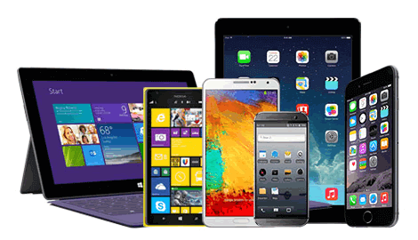

Mobile Computing is a technology that provides an environment that enables users to transmit data from one device to another device without the use of any physical link or cables. In other words, you can say that mobile computing allows transmission of data, voice and video via a computer or any other wireless-enabled device without being connected to a fixed physical link. In this technology, data transmission is done wirelessly with the help of wireless devices such as mobiles, laptops etc. This is only because of Mobile Computing technology that you can access and transmit data from any remote locations without being present there physically. Mobile computing technology provides a vast coverage diameter for communication. It is one of the fastest and most reliable sectors of the computing technology field.
Mobile Communication specifies a framework that is responsible for the working of mobile computing technology. In this case, mobile communication refers to an infrastructure that ensures seamless and reliable communication among wireless devices. This framework ensures the consistency and reliability of communication between wireless devices. The mobile communication framework consists of communication devices such as protocols, services, bandwidth, and portals necessary to facilitate and support the stated services. These devices are responsible for delivering a smooth communication process.
Fixed and Wired: In Fixed and Wired configuration, the devices are fixed at a position, and they are connected through a physical link to communicate with other devices. For Example, Desktop Computer. Fixed and Wireless: In Fixed and Wireless configuration, the devices are fixed at a position, and they are connected through a wireless link to make communication with other devices. For Example, Communication Towers, WiFi router Mobile and Wired: In Mobile and Wired configuration, some devices are wired, and some are mobile. They altogether make communication with other devices. For Example, Laptops. Mobile and Wireless: In Mobile and Wireless configuration, the devices can communicate with each other irrespective of their position. They can also connect to any network without the use of any wired device. For Example, WiFi Dongle.
Mobile hardware consists of mobile devices or device components that can be used to receive or access the service of mobility. Examples of mobile hardware can be smartphones, laptops, portable PCs, tablet PCs, Personal Digital Assistants, etc.
These devices are inbuilt with a receptor medium that can send and receive signals. These devices are capable of operating in full-duplex. It means they can send and receive signals at the same time. They don't have to wait until one device has finished communicating for the other device to initiate communications.
Mobile software is a program that runs on mobile hardware. This is designed to deal capably with the characteristics and requirements of mobile applications. This is the operating system for the appliance of mobile devices. In other words, you can say it the heart of the mobile systems. This is an essential component that operates the mobile device.
500" height="600">This provides portability to mobile devices, which ensures wireless communication.